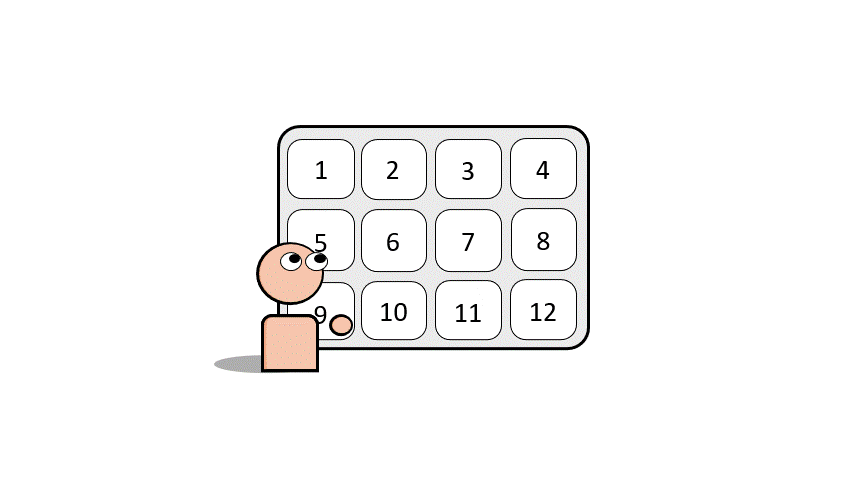
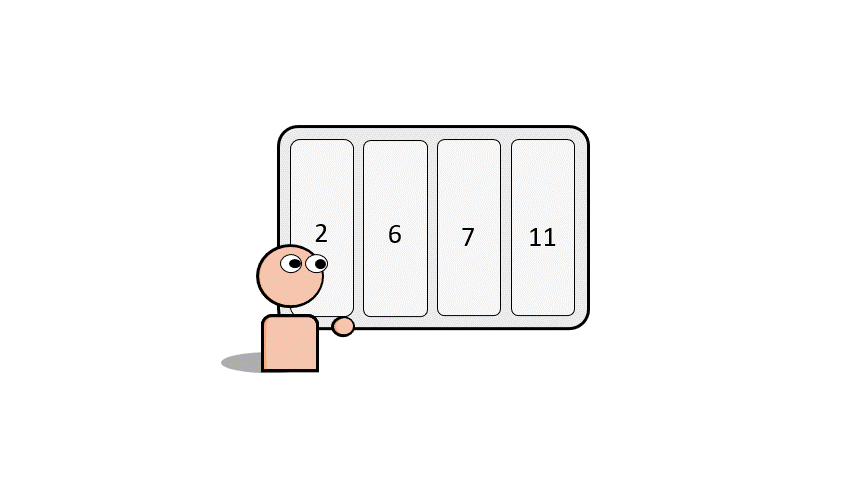

About MIRAGE
MIRAGE was created by Matheus Kunzler Maldaner during a summer REU at Carnegie Mellon University working with Wesley Hanwen Deng, as well as professors Motahhare Eslami, Ken Holstein, and Jason Hong.
Find patterns and detect inconsistencies in AI generated images from multiple text-to-image models.
1

Select Models
Select up to 4 different Text-To-Image AI Models from the list.
2

Write Your Prompt
Write your prompt, click 'Generate' and wait for the images to appear.
3

Observe The Results
Select which models matched your original expectations.
If you want to do research with MIRAGE, contact mkunzlermaldaner@ufl.edu